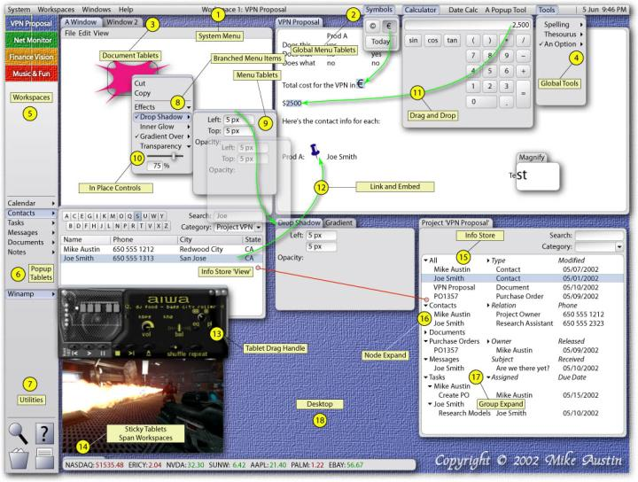

The Context Oriented User Interface
2002 Mike Austin
The Context Oriented User Interface
Tablets, Workspaces and Projects
The System Menu and the System Toolbar
Information Exchange and Storage
For years, I've toyed with ideas relating to user interfaces, computer languages, and information systems. In the recent months, ideas have come together to form a larger picture. It is my interpretation of user interface evolution which I call the Context Oriented User Interface, where information is a core part of the puzzle, not just a bi-product. In today's GUI's you have cluttered, overlapping, stand-alone, non-persistent windows. Version control? Ha! Collaboration? Ha! Workflow? Ha! Data exchange standards? Ha! Temporal UI's such as LifeStreams? Well, they seem a little too focused on time, and forget about other information.
Let's look at an example of a real life project. A project has tasks, with related contacts, events, documents, purchase orders, messages, notes, etc. A project is simply a container with links to related information. I want to open a past project called "Phone System Upgrade" that will contain all the information related to that project. Who spoke to whom? When was the PO released? Who was assigned what tasks?
What we need to do is bring the simplicity of handheld platforms to the desktop.
The context menu, although very simple, is used in almost every application today. It allows the user to select from a list of command to be performed on the currently selected object. If you right click on a file in Windows Explorer, a context menu will appear containing items such as Open, Print and Delete. Now you don't have to move your mouse up to the menu bar, look for the command you're looking for, then move the mouse back where it was.
3D Studio Max menus
When I first started using computers, I was introduced to the Commodore VIC 20. It had 5KB of memory and a resolution of 320 x 200 with 16 colors. Sitting at my desk, I write this with my 19 inch monitor running at 1280 x 960 x 32 bit color. Quite a difference.
After the VIC-20 and C=64, I jumped on the Amiga bandwagon because it was a fun computer. But it was also fairly advanced for it's time, in it's graphics and it's operating system. Version 1.x was pretty ugly, but they did have shared libraries and the concept of screens since the beginning. Screens were kind of virtual workspaces that programs could create and could have different dimensions and depth than the desktop. It was all done in the graphics hardware, so switching between screens literally took about 1/30th of a second. Version 2.0 introduced commodities, programs that ran in the background and could be configured by invoking it's setting window... similar to the Windows system tray. You could also add icons to the desktop, which sent your program a message if it was double-clicked or if files were dropped onto it. Version 3.0 brought datatypes, for loading and converting different types of media. Windows has codecs, or coder/decoders, but reside at a lower level. It still lacks the datatypes capability to load graphics files, mp3s, etc.
If you like playing around with systems, languages and such, you've probably tried Squeak (www.squeak.org). Squeak is a Smalltalk-80 implementation with a user interface revolving around morphs, outline based objects which can be scaled, rotated, moved, etc. It uses the concept of pure containership. This means that you can select a button on a window and drag it out onto the desktop – all while the program is running. Pressing the button works just the same, the application doesn't know the difference. Now, is this useful? Well this is just and example, so you wouldn't normally do this type of thing. Smalltalk also has the concept of projects. Projects are virtual workspaces that help un-clutter your screen. You can have a project for your music creation, one for your business proposal, and another for your games. A project can also be saved and loaded for use by other people. The drawbacks to squeak are it's speed, although a translator can convert the code to C, and it's looks. Although the look and feel can be changed because... anything can be changed... the default pastel colors churn my (an others') stomach.
I ran BeOS for a couple months, booting up between it and Win2000. It is an awesome OS and GUI. Designed from the ground up, multiprocessor ready, multimedia rich. When Microsoft introduced "Active Desktop" to the world, the developers chuckled as they knew how big a step this was for them. For the BeOS developers, it was a few keystrokes and the word replicants became commonplace in the Be community. BeOS also had datatypes like the Amiga, and multiple workspaces at different resolutions. Be's window titles are reminiscent of TWM – Tabbed Window Manager on the X Window System. The title bar is only as wide as the title. In later versions, they allowed the user to slide the tabs along the top of the window, giving the user the option to stack windows on top of each other and bring one to the front by clicking on the tab. Hmmm. Although they stared with the PowerPC platform, they turned to Intel based machines because of the oh mighty dollar. Then when I downloaded QNX to play around with it, I thought hey, there must be a lot of smart people at QNX :) The GUI is as component based as you can get, let alone the kernel being a true real-time kernel. The Shelf API allows you to add components to the system toolbar, such as volume controls, clocks, CPU meters, etc. Still, they had overlapping windows floating all around, cluttering up the desktop.
Outlook forms
MS Exchange

The Context Oriented User Interface allows the user to focus on the task at hand, rather than sifting through mounds of information and switching between windows. It is comprised of Tablets, Workspaces, Projects, and Data Stores.
The core concepts behind screen real estate management are Tablets and Workspaces. These allow the user to customize their view for maximal efficiency.
Tablets, short for "tabbed-applets", are windows with tabs as title bars arranged in a virtual shelving system, similar to Adobe Photoshop palettes. Each tablet is represented by a tab and it's associated window. Tablets can be layered on top of each other, with it's associated tab in line with other tabs. They are always visible and switching between them is simply done by clicking the tab. You can actually do this in BeOS with a little manual window management. The idea is to organize windows and to get away from cluttered, layered windows.
Workspaces are virtual desktops, which help un-clutter the desktop and let the user focus on the task at hand. The user may have one for a special project, one for Internet tools, one for financial tracking, etc. A Project is a collection of related items such as messages, contacts, documents, notes, etc viewed in a tree-branch format. Each workspace can be associated with a project, which in turn makes the workspace context sensitive to messages, contacts, documents, etc. For example, if you assign 'Project VPN' to Workspace 1, all contacts will be filtered for this project. When you are in the Project VPN Workspace, you will only see related messages, contacts, etc. You don't have to sort through loads of irrelevant information. Tablets can be set to sticky mode, so that it is show on each workspace in the same location.
Workspaces provide multiple work areas. Projects can span multiple workspaces.
Most everything in COUI is a type of tablet. Menus are simply popup tablets that allow the user to make choices. They can be dragged and placed anywhere in a Workspace if desired. This is sometimes referred to as tear-off menus in other systems. Menu items can contain sub-menus, which appear when hovered over. These submenus, and any tablet for that matter, can be viewed in place by clicking the > button in the menu item, which created a type of outline menu instead of a popup menu. This allows you to customize your menus however you see fit. If you wanted to, you could even inline a tablet such as the calculator into the menu, but only usage will tell if that would enhance productivity.
Popup Tablets in the System Menu and System Toolbar are global Tablets that are used frequently, and popup when needed, and pop down when no longer needed. System Popup Tablets solve many problems associated with window management, especially dragging and dropping. For example, to insert a contact into a document, simply click the Contacts menu on the System Toolbar, find the contact, and drag them to your document. Since the Tablet will hide itself after a drag operation, the screen is free and you are able to drop the item anywhere you like, even on another Popup Tablet.
Examples of System Tablets are the:
The System Menu provides common items for Tablet and Workspace and Session management. It also provides room for Popup Tablet and a clock. The System Menu is really only a container which holds these applets and can be configured any way possible.
The COUI is a message driven interface. This means objects – Tablets, Projects, Workspaces, etc. respond to messages sent from other objects or from the user. Menus simply send messages such as cutToClipboard or showProperties to the selected object, if the object supports the required protocol. If the object understands the message, it will be performed. This enables objects to be heavily re-used. For example, a font editor tablet can work with any object that accepts font related messages, such as changing the size, color or style.
Tablets can be re-ordered, placed on different shelves or workspaces
Data can be copied by dragging from one object to another. For example, a color can be dragged from one object to another, and the target object will change color appropriately.
If an object is a container, it can hold other objects. Adding sub-objects creates an object hierarchy. These hierarchies can be persistent simply by using a Data Store.
A Data Store is a lightweight database that allows objects to be persistent, and allows objects to easily integrate. For example, an application might want to read your calendar for upcoming events. Because data is stored in a known format, it is easy to use data created by other applications. This is similar to PDA databases such as Palm and Windows CE. The data store can store both structured data such as contacts and purchase orders, and non-structured documents such as text documents and spreadsheets.
Utilities
In-line Controls
Outline Menu Items
Timelines
Microsoft Team Manager
- Had to broadcast e-mail if any changes made to schedule
Mouse
Trackball
Touch pad
Touch screen
Gestures
BeOS
MacOS X
QNX Photon
Amiga
Windows
Supercomputer
Workstation
Desktop
Laptop
Handheld
Palmsize
Asynchronous
Voice
Zoom/Pan
Black hole
Filter lens http://www2.parc.com/istl/projects/MagicLenses/94CHIFilters.html
Auto-scrolling / Virtual view
Documents
Versioning
Linking